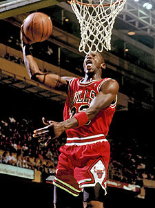

Basketball
| 
Michael Jordan goes for a slam dunk
|
|
| Highest governing body | FIBA |
|---|---|
| First played | 1891, Springfield, Massachusetts, U.S. |
| Characteristics | |
| Contact | Yes |
| Team members | 5 per side |
| Mixed gender | Yes, separate competitions |
| Type | Team sport, ball sport |
| Equipment | Basketball |
| Venue | Indoor court (mainly) or outdoor court (Streetball) |
| Presence | |
| Olympic | Demonstrated in the 1904 and 1924 Summer Olympics Part of the Summer Olympic program since 1936 |
Basketball is a sport played by two teams of five players on a rectangular court. The objective is to shoot a ball through a hoop 18 inches (46 cm) in diameter and 10 feet (3.048 m) high mounted to a backboard at each end.
A team can score a field goal by shooting the ball through the basket during regular play. A field goal scores three points for the shooting team if the player shoots from behind the three-point line, and two points if shot from in front of the line. A team can also score via free throws, which are worth one point, after the other team was assessed with certain fouls. The team with the most points at the end of the game wins, but additional time (overtime) is issued when the score is tied at the end of regulation. The ball can be advanced on the court by throwing it to a teammate, or by bouncing it while walking or running (dribbling). It is a violation to lift, or drag, one's pivot foot without dribbling the ball, to carry it, or to hold the ball with both hands then resume dribbling.
There are many techniques for ball handlingâshooting, passing, dribbling, and rebounding. Basketball teams generally have player positions, the tallest and strongest members of a team are called a center or power forward, while slightly shorter and more agile players are called small forward, and the shortest players or those who possess the best ball handling skills are called a point guard or shooting guard. The point guard directs the on court action of the team, implementing the coach's game plan, and managing the execution of offensive and defensive plays (player positioning).
Basketball is one of the world's most popular and widely viewed sports.[1] The National Basketball Association (NBA) is the most popular and widely considered to be the highest level of professional basketball in the world and NBA players are the world's best paid sportsmen, by average annual salary per player.[2][3] Outside North America, the top clubs from national leagues qualify to continental championships such as the Euroleague and FIBA Americas League. The FIBA Basketball World Cup attracts the top national teams from around the world. Each continent hosts regional competitions for national teams, like EuroBasket and FIBA Americas Championship.
Women's basketball is less popular than men's. The FIBA Women's Basketball World Cup features the top national teams from continental championships. The main North American league is the WNBA, whereas the EuroLeague Women has been dominated by teams from the Russian Women's Basketball Premier League.
Contents
[hide]History
Creation
In early December 1891, Canadian Dr. James Naismith,[4] a physical education professor and instructor at the International Young Men's Christian Association Training School[5] (YMCA) (today, Springfield College) in Springfield, Massachusetts was trying to keep his gym class active on a rainy day. He sought a vigorous indoor game to keep his students occupied and at proper levels of fitness during the long New England winters. After rejecting other ideas as either too rough or poorly suited to walled-in gymnasiums, he wrote the basic rules and nailed a peach basket onto a 10-foot (3.05 m) elevated track. In contrast with modern basketball nets, this peach basket retained its bottom, and balls had to be retrieved manually after each "basket" or point scored; this proved inefficient, however, so the bottom of the basket was removed,[6] allowing the balls to be poked out with a long dowel each time.
Basketball was originally played with a soccer ball. The first balls made specifically for basketball were brown, and it was only in the late 1950s that Tony Hinkle, searching for a ball that would be more visible to players and spectators alike, introduced the orange ball that is now in common use. Dribbling was not part of the original game except for the "bounce pass" to teammates. Passing the ball was the primary means of ball movement. Dribbling was eventually introduced but limited by the asymmetric shape of early balls. Dribbling only became a major part of the game around the 1950s, as manufacturing improved the ball shape.
The peach baskets were used until 1906 when they were finally replaced by metal hoops with backboards. A further change was soon made, so the ball merely passed through. Whenever a person got the ball in the basket, his team would gain a point. Whichever team got the most points won the game.[7] The baskets were originally nailed to the mezzanine balcony of the playing court, but this proved impractical when spectators in the balcony began to interfere with shots. The backboard was introduced to prevent this interference; it had the additional effect of allowing rebound shots.[8] Naismith's handwritten diaries, discovered by his granddaughter in early 2006, indicate that he was nervous about the new game he had invented, which incorporated rules from a children's game called "Duck on a Rock", as many had failed before it. Naismith called the new game "Basket Ball".[9] The first official game was played in the YMCA gymnasium in Albany, New York, on January 20, 1892, with nine players. The game ended at 1â0; the shot was made from 25 feet (7.6 m), on a court just half the size of a present-day Streetball or National Basketball Association (NBA) court. By 1897â1898 teams of five became standard.
College basketball
Basketball's early adherents were dispatched to YMCAs throughout the United States, and it quickly spread through the USA and Canada. By 1895, it was well established at several women's high schools. While the YMCA was responsible for initially developing and spreading the game, within a decade it discouraged the new sport, as rough play and rowdy crowds began to detract from the YMCA's primary mission. However, other amateur sports clubs, colleges, and professional clubs quickly filled the void. In the years before World War I, the Amateur Athletic Union and the Intercollegiate Athletic Association of the United States (forerunner of the NCAA) vied for control over the rules for the game. The first pro league, the National Basketball League, was formed in 1898 to protect players from exploitation and to promote a less rough game. This league only lasted five years.
Dr. James Naismith was instrumental in establishing college basketball. His colleague C.O. Beamis fielded the first college basketball team just a year after the Springfield YMCA game at the suburban Pittsburgh Geneva College.[10] Naismith himself later coached at the University of Kansas for six years, before handing the reins to renowned coach Forrest "Phog" Allen. Naismith's disciple Amos Alonzo Stagg brought basketball to the University of Chicago, while Adolph Rupp, a student of Naismith's at Kansas, enjoyed great success as coach at the University of Kentucky. On February 9, 1895, the first intercollegiate 5-on-5 game was played at Hamline University between Hamline and the School of Agriculture, which was affiliated with the University of Minnesota.[11][12] The School of Agriculture won in a 9â3 game.
In 1901, colleges, including the University of Chicago, Columbia University, Dartmouth College, the University of Minnesota, the U.S. Naval Academy, the University of Colorado and Yale University began sponsoring men's games. In 1905, frequent injuries on the football field prompted President Theodore Roosevelt to suggest that colleges form a governing body, resulting in the creation of the Intercollegiate Athletic Association of the United States (IAAUS). In 1910, that body would change its name to the National Collegiate Athletic Association (NCAA). The first Canadian interuniversity basketball game was played at the YMCA in Kingston, Ontario on February 6, 1904, when McGill University visited Queen's University. McGill won 9â7 in overtime; the score was 7â7 at the end of regulation play, and a ten-minute overtime period settled the outcome. A good turnout of spectators watched the game.[13]
The first men's national championship tournament, the National Association of Intercollegiate Basketball tournament, which still exists as the National Association of Intercollegiate Athletics (NAIA) tournament, was organized in 1937. The first national championship for NCAA teams, the National Invitation Tournament (NIT) in New York, was organized in 1938; the NCAA national tournament would begin one year later. College basketball was rocked by gambling scandals from 1948 to 1951, when dozens of players from top teams were implicated in match fixing and point shaving. Partially spurred by an association with cheating, the NIT lost support to the NCAA tournament.
High school basketball
| The examples and perspective in this article deal primarily with the United States and do not represent a worldwide view of the subject. (August 2012) |

Before widespread school district consolidation, most American high schools were far smaller than their present-day counterparts. During the first decades of the 20th century, basketball quickly became the ideal interscholastic sport due to its modest equipment and personnel requirements. In the days before widespread television coverage of professional and college sports, the popularity of high school basketball was unrivaled in many parts of America. Perhaps the most legendary of high school teams was Indiana's Franklin Wonder Five, which took the nation by storm during the 1920s, dominating Indiana basketball and earning national recognition.
Today virtually every high school in the United States fields a basketball team in varsity competition.[14] Basketball's popularity remains high, both in rural areas where they carry the identification of the entire community, as well as at some larger schools known for their basketball teams where many players go on to participate at higher levels of competition after graduation. In the 2003â04 season, 1,002,797 boys and girls represented their schools in interscholastic basketball competition, according to the National Federation of State High School Associations. The states of Illinois, Indiana and Kentucky are particularly well known for their residents' devotion to high school basketball, commonly called Hoosier Hysteria in Indiana; the critically acclaimed film Hoosiers shows high school basketball's depth of meaning to these communities.
There is currently no national tournament to determine a national high school champion. The most serious effort was the National Interscholastic Basketball Tournament at the University of Chicago from 1917 to 1930. The event was organized by Amos Alonzo Stagg and sent invitations to state champion teams. The tournament started out as a mostly Midwest affair but grew. In 1929 it had 29 state champions. Faced with opposition from the National Federation of State High School Associations and North Central Association of Colleges and Schools that bore a threat of the schools losing their accreditation the last tournament was in 1930. The organizations said they were concerned that the tournament was being used to recruit professional players from the prep ranks.[15] The tournament did not invite minority schools or private/parochial schools.
The National Catholic Interscholastic Basketball Tournament ran from 1924 to 1941 at Loyola University.[16] The National Catholic Invitational Basketball Tournament from 1954 to 1978 played at a series of venues, including Catholic University, Georgetown and George Mason.[17] The National Interscholastic Basketball Tournament for Black High Schools was held from 1929 to 1942 at Hampton Institute.[18] The National Invitational Interscholastic Basketball Tournament was held from 1941 to 1967 starting out at Tuskegee Institute. Following a pause during World War II it resumed at Tennessee State College in Nashville. The basis for the champion dwindled after 1954 when Brown v. Board of Education began an integration of schools. The last tournaments were held at Alabama State College from 1964 to 1967.[19]
Professional basketball
Teams abounded throughout the 1920s. There were hundreds of men's professional basketball teams in towns and cities all over the United States, and little organization of the professional game. Players jumped from team to team and teams played in armories and smoky dance halls. Leagues came and went. Barnstorming squads such as the Original Celtics and two all-African American teams, the New York Renaissance Five ("Rens") and the (still existing) Harlem Globetrotters played up to two hundred games a year on their national tours.
In 1946, the Basketball Association of America (BAA) was formed. The first game was played in Toronto, Ontario, Canada between the Toronto Huskies and New York Knickerbockers on November 1, 1946. Three seasons later, in 1949, the BAA merged with the National Basketball League to form the National Basketball Association (NBA). By the 1950s, basketball had become a major college sport, thus paving the way for a growth of interest in professional basketball. In 1959, a basketball hall of fame was founded in Springfield, Massachusetts, site of the first game. Its rosters include the names of great players, coaches, referees and people who have contributed significantly to the development of the game. The hall of fame has people who have accomplished many goals in their career in basketball. An upstart organization, the American Basketball Association, emerged in 1967 and briefly threatened the NBA's dominance until the ABA-NBA merger in 1976. Today the NBA is the top professional basketball league in the world in terms of popularity, salaries, talent, and level of competition.
The NBA has featured many famous players, including George Mikan, the first dominating "big man"; ball-handling wizard Bob Cousy and defensive genius Bill Russell of the Boston Celtics; Wilt Chamberlain, who originally played for the barnstorming Harlem Globetrotters; all-around stars Oscar Robertson and Jerry West; more recent big men Kareem Abdul-Jabbar, Shaquille O'Neal and Karl Malone; playmaker John Stockton; crowd-pleasing forward Julius Erving; European stars Dirk Nowitzki and Dražen PetroviÄ; more recent stars LeBron James, Kevin Durant, and Kobe Bryant, and the three players who many credit with ushering the professional game to its highest level of popularity: Larry Bird, Earvin "Magic" Johnson, and Michael Jordan. In 2001, the NBA formed a developmental league, the NBA Development League. As of 2015, the D-league has 19 teams.
International basketball
FIBA (International Basketball Federation) was formed in 1932 by eight founding nations: Argentina, Czechoslovakia, Greece, Italy, Latvia, Portugal, Romania and Switzerland. At this time, the organization only oversaw amateur players. Its acronym, derived from the French Fédération Internationale de Basket-ball Amateur, was thus "FIBA". Men's basketball was first included at the Berlin 1936 Summer Olympics, although a demonstration tournament was held in 1904. The United States defeated Canada in the first final, played outdoors. This competition has usually been dominated by the United States, whose team has won all but three titles. The first of these came in a controversial final game in Munich in 1972 against the Soviet Union, in which the ending of the game was replayed three times until the Soviet Union finally came out on top.[20] In 1950 the first FIBA World Championship for men, now known as the FIBA Basketball World Cup, was held in Argentina. Three years later, the first FIBA World Championship for Women, now known as the FIBA Women's Basketball World Cup, was held in Chile. Women's basketball was added to the Olympics in 1976, which were held in Montreal, Canada with teams such as the Soviet Union, Brazil and Australia rivaling the American squads.
FIBA dropped the distinction between amateur and professional players in 1989, and in 1992, professional players played for the first time in the Olympic Games. The United States' dominance continued with the introduction of their Dream Team. In the 2004 Athens Olympics, the United States suffered its first Olympic loss while using professional players, falling to Puerto Rico (in a 19-point loss) and Lithuania in group games, and being eliminated in the semifinals by Argentina. It eventually won the bronze medal defeating Lithuania, finishing behind Argentina and Italy. The "Redeem Team", won gold at the 2008 Olympics, and the so-called "B-Team", won gold at the 2010 FIBA World Championship in Turkey despite featuring no players from the 2008 squad. The United States continued its dominance as they won gold at the 2012 Olympics and the 2014 FIBA World Cup.
Worldwide, basketball tournaments are held for boys and girls of all age levels. The global popularity of the sport is reflected in the nationalities represented in the NBA. Players from all six inhabited continents currently play in the NBA. Top international players began coming into the NBA in the mid-1990s, including Croatians Dražen PetroviÄ and Toni KukoÄ, Serbian Vlade Divac, Lithuanians Arvydas Sabonis and Å arÅ«nas MarÄiulionis and German Detlef Schrempf.
In the Philippines, the Philippine Basketball Association's first game was played on April 9, 1975 at the Araneta Coliseum in Cubao, Quezon City. Philippines. It was founded as a "rebellion" of several teams from the now-defunct Manila Industrial and Commercial Athletic Association, which was tightly controlled by the Basketball Association of the Philippines (now defunct), the then-FIBA recognized national association. Nine teams from the MICAA participated in the league's first season that opened on April 9, 1975. The NBL is Australia's pre-eminent men's professional basketball league. The league commenced in 1979, playing a winter season (AprilâSeptember) and did so until the completion of the 20th season in 1998. The 1998â99 season, which commenced only months later, was the first season after the shift to the current summer season format (OctoberâApril). This shift was an attempt to avoid competing directly against Australia's various football codes. It features 8 teams from around Australia and one in New Zealand. A few players including Luc Longley, Andrew Gaze, Shane Heal, Chris Anstey and Andrew Bogut made it big internationally, becoming poster figures for the sport in Australia. The Women's National Basketball League began in 1981.
Women's basketball
Women's basketball began in 1892 at Smith College when Senda Berenson, a physical education teacher, modified Naismith's rules for women. Shortly after she was hired at Smith, she went to Naismith to learn more about the game.[21] Fascinated by the new sport and the values it could teach, she organized the first women's collegiate basketball game on March 21, 1893, when her Smith freshmen and sophomores played against one another.[22] However, the first women's interinstitutional game was played in 1892 between the University of California and Miss Head's School.[23] Berenson's rules were first published in 1899, and two years later she became the editor of A. G. Spalding's first Women's Basketball Guide.[22] Berenson's freshmen played the sophomore class in the first women's intercollegiate basketball game at Smith College, March 21, 1893.[24] The same year, Mount Holyoke and Sophie Newcomb College (coached by Clara Gregory Baer) women began playing basketball. By 1895, the game had spread to colleges across the country, including Wellesley, Vassar, and Bryn Mawr. The first intercollegiate women's game was on April 4, 1896. Stanford women played Berkeley, 9-on-9, ending in a 2â1 Stanford victory.
Women's basketball development was more structured than that for men in the early years. In 1905, the Executive Committee on Basket Ball Rules (National Women's Basketball Committee) was created by the American Physical Education Association.[25] These rules called for six to nine players per team and 11 officials. The International Women's Sports Federation (1924) included a women's basketball competition. 37 women's high school varsity basketball or state tournaments were held by 1925. And in 1926, the Amateur Athletic Union backed the first national women's basketball championship, complete with men's rules.[25] The Edmonton Grads, a touring Canadian women's team based in Edmonton, Alberta, operated between 1915 and 1940. The Grads toured all over North America, and were exceptionally successful. They posted a record of 522 wins and only 20 losses over that span, as they met any team that wanted to challenge them, funding their tours from gate receipts.[26] The Grads also shone on several exhibition trips to Europe, and won four consecutive exhibition Olympics tournaments, in 1924, 1928, 1932, and 1936; however, women's basketball was not an official Olympic sport until 1976. The Grads' players were unpaid, and had to remain single. The Grads' style focused on team play, without overly emphasizing skills of individual players. The first women's AAU All-America team was chosen in 1929.[25] Women's industrial leagues sprang up throughout the United States, producing famous athletes, including Babe Didrikson of the Golden Cyclones, and the All American Red Heads Team, which competed against men's teams, using men's rules. By 1938, the women's national championship changed from a three-court game to two-court game with six players per team.[25]
The NBA-backed Women's National Basketball Association (WNBA) began in 1997. Though it had shaky attendance figures, several marquee players (Lisa Leslie, Diana Taurasi, and Candace Parker among others) have helped the league's popularity and level of competition. Other professional women's basketball leagues in the United States, such as the American Basketball League (1996â98), have folded in part because of the popularity of the WNBA. The WNBA has been looked at by many as a niche league. However, the league has recently taken steps forward. In June 2007, the WNBA signed a contract extension with ESPN. The new television deal runs from 2009 to 2016. Along with this deal, came the first ever rights fees to be paid to a women's professional sports league. Over the eight years of the contract, "millions and millions of dollars" will be "dispersed to the league's teams." The WNBA gets more viewers on national television broadcasts (413,000) than both Major League Soccer (253,000)[27] and the NHL (310,732).[28] In a March 12, 2009 article, NBA commissioner David Stern said that in the bad economy, "the NBA is far less profitable than the WNBA. We're losing a lot of money among a large number of teams. We're budgeting the WNBA to break even this year."[29]
Rules and regulations
Measurements and time limits discussed in this section often vary among tournaments and organizations; international and NBA rules are used in this section.
The object of the game is to outscore one's opponents according to the rules and regulations by throwing the ball through the opponents' basket from above while preventing the opponents from doing so on their own according to the rules and regulations. An attempt to score in this way is called a shot. A successful shot is worth two points, or three points if it is taken from beyond the three-point arc 6.75 metres (22 ft 2 in) from the basket in international games and 23 feet 9 inches (7.24 m) in NBA games according to the rules and regulations. A one-point shot can be earned when shooting from the foul line after a foul is made.
Playing regulations
Games are played in four quarters of 10 (FIBA)[30] or 12 minutes (NBA).[31] College men's games use two 20-minute halves,[32] college women's games use 10-minute quarters,[33] and United States high school varsity games use 8 minute quarters.[34] 15 minutes are allowed for a half-time break under FIBA, NBA, and NCAA rules[32][35][36] and 10 minutes in United States high schools.[34] Overtime periods are five minutes in length[32][37][38] except for high school, which is four minutes in length.[34] Teams exchange baskets for the second half. The time allowed is actual playing time; the clock is stopped while the play is not active. Therefore, games generally take much longer to complete than the allotted game time, typically about two hours.
Five players from each team may be on the court at one time.[39][40][41][42] Substitutions are unlimited but can only be done when play is stopped. Teams also have a coach, who oversees the development and strategies of the team, and other team personnel such as assistant coaches, managers, statisticians, doctors and trainers.
For both men's and women's teams, a standard uniform consists of a pair of shorts and a jersey with a clearly visible number, unique within the team, printed on both the front and back. Players wear high-top sneakers that provide extra ankle support. Typically, team names, players' names and, outside of North America, sponsors are printed on the uniforms.
A limited number of time-outs, clock stoppages requested by a coach (or sometimes mandated in the NBA) for a short meeting with the players, are allowed. They generally last no longer than one minute (100 seconds in the NBA) unless, for televised games, a commercial break is needed.
The game is controlled by the officials consisting of the referee (referred to as crew chief in the NBA), one or two umpires (referred to as referees in the NBA) and the table officials. For college, the NBA, and many high schools, there are a total of three referees on the court. The table officials are responsible for keeping track of each teams scoring, timekeeping, individual and team fouls, player substitutions, team possession arrow, and the shot clock.
Equipment

The only essential equipment in a basketball game is the ball and the court: a flat, rectangular surface with baskets at opposite ends. Competitive levels require the use of more equipment such as clocks, score sheets, scoreboard(s), alternating possession arrows, and whistle-operated stop-clock systems.
A regulation basketball court in international games is 91.9 feet long (28 meters) and 49.2 (15 meters) feet wide. In the NBA and NCAA the court is 94 feet (28.6 meters) by 50 feet (15.24 meters). Most courts have wood flooring, usually constructed from maple planks running in the same direction as the longer court dimension.[43] The name and logo of the home team is usually painted on or around the center circle.
The basket is a steel rim 18 inches (45.72 cm) diameter with an attached net affixed to a backboard that measures 6 feet (1.82 meters) by 3.5 feet (1.06 meters) and one basket is at each end of the court. The white outlined box on the backboard is 18 inches (45.72 cm) high and 2 feet (60.96 cm) wide. At almost all levels of competition, the top of the rim is exactly 10 feet (3.05 meters) above the court and 4 feet (1.21 meters) inside the baseline. While variation is possible in the dimensions of the court and backboard, it is considered important for the basket to be of the correct height â a rim that is off by just a few inches can have an adverse effect on shooting.
The size of the basketball is also regulated. For men, the official ball is 29.5 inches (74.93 cm) in circumference (size 7, or a "295 ball") and weighs 22 oz (623.69 grams). If women are playing, the official basketball size is 28.5 inches (72.39 cm) in circumference (size 6, or a "285 ball") with a weight of 20 oz (567 grams). In 3x3, a formalized version of the halfcourt 3-on-3 game, a dedicated ball with the circumference of a size 6 ball but the weight of a size 7 ball is used in all competitions (men's, women's, and mixed teams).[44]
Violations
The ball may be advanced toward the basket by being shot, passed between players, thrown, tapped, rolled or dribbled (bouncing the ball while running).
The ball must stay within the court; the last team to touch the ball before it travels out of bounds forfeits possession. The ball is out of bounds if it touches a boundary line, or touches any player or object that is out of bounds.
There are limits placed on the steps a player may take without dribbling, which commonly results in an infraction known as traveling. Nor may a player stop his dribble and then resume dribbling. A dribble that touches both hands is considered stopping the dribble, giving this infraction the name double dribble. Within a dribble, the player cannot carry the ball by placing his hand on the bottom of the ball; doing so is known as carrying the ball. A team, once having established ball control in the front half of their court, may not return the ball to the backcourt and be the first to touch it. A violation of these rules results in loss of possession.
The ball may not be kicked, nor be struck with the fist. For the offense, a violation of these rules results in loss of possession; for the defense, most leagues reset the shot clock and the offensive team is given possession of the ball out of bounds.
There are limits imposed on the time taken before progressing the ball past halfway (8 seconds in FIBA and the NBA; 10 seconds in NCAA and high school for both sexes), before attempting a shot (24 seconds in FIBA, the NBA, and Canadian Interuniversity Sport play for both sexes, and 30 seconds in NCAA play for both sexes), holding the ball while closely guarded (5 seconds), and remaining in the restricted area known as the free-throw lane, (or the "key") (3 seconds). These rules are designed to promote more offense.
Basket interference, or goaltending is a violation charged when a player illegally interferes with a shot. This violation is incurred when a player touches the ball on its downward trajectory to the basket, unless it is obvious that the ball has no chance of entering the basket, if a player touches the ball while it is in the rim, or in the area extended upwards from the basket, or if a player reaches through the basket to interfere with the shot. When a defensive player is charged with goaltending, the basket is awarded. If an offensive player commits the infraction, the basket is cancelled. In either case possession of the ball is turned over to the defensive team.
Fouls

{kind=link}
{kind=link}
{kind=link}
{kind=link}
{kind=link}
{kind=link}
{kind=link}
{kind=link}
{kind=link}
An attempt to unfairly disadvantage an opponent through certain types physical contact is illegal and is called a personal foul. These are most commonly committed by defensive players; however, they can be committed by offensive players as well. Players who are fouled either receive the ball to pass inbounds again, or receive one or more free throws if they are fouled in the act of shooting, depending on whether the shot was successful. One point is awarded for making a free throw, which is attempted from a line 15 feet (4.6 m) from the basket.
The referee is responsible for judging whether contact is illegal, sometimes resulting in controversy. The calling of fouls can vary between games, leagues and referees.
There is a second category of fouls called technical fouls, which may be charged for various rules violations including failure to properly record a player in the scorebook, or for unsportsmanlike conduct. These infractions result in one or two free throws, which may be taken by any of the five players on the court at the time. Repeated incidents can result in disqualification. A blatant foul involving physical contact that is either excessive or unnecessary is called an intentional foul (flagrant foul in the NBA). In FIBA, a foul resulting in ejection is called a disqualifying foul, while in leagues other than the NBA, such a foul is referred to as flagrant.
If a team exceeds a certain limit of team fouls in a given period (quarter or half) â four for NBA, NCAA women's, and international games â the opposing team is awarded one or two free throws on all subsequent non-shooting fouls for that period, the number depending on the league. In the US college men's game and high school games for both sexes, if a team reaches 7 fouls in a half, the opposing team is awarded one free throw, along with a second shot if the first is made. This is called shooting "one-and-one". If a team exceeds 10 fouls in the half, the opposing team is awarded two free throws on all subsequent fouls for the half.
When a team shoots foul shots, the opponents may not interfere with the shooter, nor may they try to regain possession until the last or potentially last free throw is in the air.
After a team has committed a specified number of fouls, the other team is said to be "in the bonus". On scoreboards, this is usually signified with an indicator light reading "Bonus" or "Penalty" with an illuminated directional arrow or dot indicating that team is to receive free throws when fouled by the opposing team. (Some scoreboards also indicate the number of fouls committed.)
If a team misses the first shot of a two-shot situation, the opposing team must wait for the completion of the second shot before attempting to reclaim possession of the ball and continuing play.
If a player is fouled while attempting a shot and the shot is unsuccessful, the player is awarded a number of free throws equal to the value of the attempted shot. A player fouled while attempting a regular two-point shot thus receives two shots. A player fouled while attempting a three-point shot, on the other hand, receives three shots.
If a player is fouled while attempting a shot and the shot is successful, typically the player will be awarded one additional free throw for one point. In combination with a regular shot, this is called a "three-point play" or "four-point play" (or more colloquially, an "and one") because of the basket made at the time of the foul (2 or 3 points) and the additional free throw (1 point).
Common techniques and practices
Positions
{kind=link}
Although the rules do not specify any positions whatsoever, they have evolved as part of basketball. During the early years of basketball's evolution,two guards, two forwards, and one center were used. In more recent times specific positions evolved, but the current trend, advocated by many top coaches including Mike Krzyzewski is towards positionless basketball, where big guys are free to shoot from outside and dribble if their skill allows it.[45] Popular descriptions of positions include:
Point guard (often called the "1") : usually the fastest player on the team, organizes the team's offense by controlling the ball and making sure that it gets to the right player at the right time.
Shooting guard (the "2") : creates a high volume of shots on offense, mainly long-ranged; and guards the opponent's best perimeter player on defense.
Small forward (the "3") : often primarily responsible for scoring points via cuts to the basket and dribble penetration; on defense seeks rebounds and steals, but sometimes plays more actively.
Power forward (the "4"): plays offensively often with their back to the basket; on defense, plays under the basket (in a zone defense) or against the opposing power forward (in man-to-man defense).
Center (the "5"): uses height and size to score (on offense), to protect the basket closely (on defense), or to rebound.
The above descriptions are flexible. For most teams today, the shooting guard and small forward have very similar responsibilities and are often called the wings, as do the power forward and center, who are often called post players. While most teams describe two players as guards, two as forwards, and one as a center, on some occasions teams choose to call them by different designations.
Strategy
There are two main defensive strategies: zone defense and man-to-man defense. In a zone defense, each player is assigned to guard a specific area of the court. Zone defenses often allow the defense to double team the ball, a manoeuver known as a trap. In a man-to-man defense, each defensive player guards a specific opponent.
Offensive plays are more varied, normally involving planned passes and movement by players without the ball. A quick movement by an offensive player without the ball to gain an advantageous position is known as a cut. A legal attempt by an offensive player to stop an opponent from guarding a teammate, by standing in the defender's way such that the teammate cuts next to him, is a screen or pick. The two plays are combined in the pick and roll, in which a player sets a pick and then "rolls" away from the pick towards the basket. Screens and cuts are very important in offensive plays; these allow the quick passes and teamwork, which can lead to a successful basket. Teams almost always have several offensive plays planned to ensure their movement is not predictable. On court, the point guard is usually responsible for indicating which play will occur.
Shooting
{kind=link}
Shooting is the act of attempting to score points by throwing the ball through the basket, methods varying with players and situations.
Typically, a player faces the basket with both feet facing the basket. A player will rest the ball on the fingertips of the dominant hand (the shooting arm) slightly above the head, with the other hand supporting the side of the ball. The ball is usually shot by jumping (though not always) and extending the shooting arm. The shooting arm, fully extended with the wrist fully bent, is held stationary for a moment following the release of the ball, known as a follow-through. Players often try to put a steady backspin on the ball to absorb its impact with the rim. The ideal trajectory of the shot is somewhat controversial, but generally a proper arc is recommended. Players may shoot directly into the basket or may use the backboard to redirect the ball into the basket.
{kind=link}
The two most common shots that use the above described setup are the set-shot and the jump-shot. The set-shot is taken from a standing position, with neither foot leaving the floor, typically used for free throws, and in other circumstances while the jump-shot is taken in mid-air, the ball released near the top of the jump. This provides much greater power and range, and it also allows the player to elevate over the defender. Failure to release the ball before the feet return to the floor is considered a traveling violation.
Another common shot is called the lay-up. This shot requires the player to be in motion toward the basket, and to "lay" the ball "up" and into the basket, typically off the backboard (the backboard-free, underhand version is called a finger roll). The most crowd-pleasing and typically highest-percentage accuracy shot is the slam dunk, in which the player jumps very high and throws the ball downward, through the basket while touching it.
Another shot that is becoming common[citation needed] is the "circus shot". The circus shot is a low-percentage shot that is flipped, heaved, scooped, or flung toward the hoop while the shooter is off-balance, airborne, falling down, and/or facing away from the basket. A back-shot is a shot taken when the player is facing away from the basket, and may be shot with the dominant hand, or both; but there is a very low chance that the shot will be successful.
A shot that misses both the rim and the backboard completely is referred to as an air-ball. A particularly bad shot, or one that only hits the backboard, is jocularly called a brick. The 'hang time is the length of time a player stays in the air after jumping, either to make a slam dunk, lay-up or jump shot.
Rebounding
{kind=link}
The objective of rebounding is to successfully gain possession of the basketball after a missed field goal or free throw, as it rebounds from the hoop or backboard. This plays a major role in the game, as most possessions end when a team misses a shot. There are two categories of rebounds: offensive rebounds, in which the ball is recovered by the offensive side and does not change possession, and defensive rebounds, in which the defending team gains possession of the loose ball. The majority of rebounds are defensive, as the team on defense tends to be in better position to recover missed shots.
Passing
A pass is a method of moving the ball between players. Most passes are accompanied by a step forward to increase power and are followed through with the hands to ensure accuracy.
A staple pass is the chest pass. The ball is passed directly from the passer's chest to the receiver's chest. A proper chest pass involves an outward snap of the thumbs to add velocity and leaves the defence little time to react.
Another type of pass is the bounce pass. Here, the passer bounces the ball crisply about two-thirds of the way from his own chest to the receiver. The ball strikes the court and bounces up toward the receiver. The bounce pass takes longer to complete than the chest pass, but it is also harder for the opposing team to intercept (kicking the ball deliberately is a violation). Thus, players often use the bounce pass in crowded moments, or to pass around a defender.
The overhead pass is used to pass the ball over a defender. The ball is released while over the passer's head.
The outlet pass occurs after a team gets a defensive rebound. The next pass after the rebound is the outlet pass.
The crucial aspect of any good pass is it being difficult to intercept. Good passers can pass the ball with great accuracy and they know exactly where each of their other teammates prefers to receive the ball. A special way of doing this is passing the ball without looking at the receiving teammate. This is called a no-look pass.
Another advanced style of passing is the behind-the-back pass, which, as the description implies, involves throwing the ball behind the passer's back to a teammate. Although some players can perform such a pass effectively, many coaches discourage no-look or behind-the-back passes, believing them to be difficult to control and more likely to result in turnovers or violations.
Dribbling
{kind=link}
Dribbling is the act of bouncing the ball continuously with one hand, and is a requirement for a player to take steps with the ball. To dribble, a player pushes the ball down towards the ground with the fingertips rather than patting it; this ensures greater control.
When dribbling past an opponent, the dribbler should dribble with the hand farthest from the opponent, making it more difficult for the defensive player to get to the ball. It is therefore important for a player to be able to dribble competently with both hands.
Good dribblers (or "ball handlers") tend to bounce the ball low to the ground, reducing the distance of travel of the ball from the floor to the hand, making it more difficult for the defender to "steal" the ball. Good ball handlers frequently dribble behind their backs, between their legs, and switch directions suddenly, making a less predictable dribbling pattern that is more difficult to defend against. This is called a crossover, which is the most effective way to move past defenders while dribbling.
A skilled player can dribble without watching the ball, using the dribbling motion or peripheral vision to keep track of the ball's location. By not having to focus on the ball, a player can look for teammates or scoring opportunities, as well as avoid the danger of having someone steal the ball away from him/her.
Blocking
A block is performed when, after a shot is attempted, a defender succeeds in altering the shot by touching the ball. In almost all variants of play, it is illegal to touch the ball after it is in the downward path of its arc; this is known as goaltending. It is also illegal under NBA and Men's NCAA basketball to block a shot after it has touched the backboard, or when any part of the ball is directly above the rim. Under international rules it is illegal to block a shot that is in the downward path of its arc or one that has touched the backboard until the ball has hit the rim. After the ball hits the rim, it is again legal to touch it even though it is no longer considered as a block performed.
To block a shot, a player has to be able to reach a point higher than where the shot is released. Thus, height can be an advantage in blocking. Players who are taller and playing the power forward or center positions generally record more blocks than players who are shorter and playing the guard positions. However, with good timing and a sufficiently high vertical leap, even shorter players can be effective shot blockers.
Height
At the professional level, most male players are above 6 feet 3 inches (1.91 m) and most women above 5 feet 7 inches (1.70 m). Guards, for whom physical coordination and ball-handling skills are crucial, tend to be the smallest players. Almost all forwards in the top men's pro leagues are 6 feet 6 inches (1.98 m) or taller. Most centers are over 6 feet 10 inches (2.08 m) tall. According to a survey given to all NBA teams,[when?] the average height of all NBA players is just under 6 feet 7 inches (2.01 m), with the average weight being close to 222 pounds (101 kg). The tallest players ever in the NBA were Manute Bol and Gheorghe MureÈan, who were both 7 feet 7 inches (2.31 m) tall. The tallest current NBA player is Sim Bhullar, who stands at 7 feet 5 inches (2.26 m). At 7 feet 2 inches (2.18 m), Margo Dydek was the tallest player in the history of the WNBA.
The shortest player ever to play in the NBA is Muggsy Bogues at 5 feet 3 inches (1.60 m).[46] Other short players have thrived at the pro level. Anthony "Spud" Webb was just 5 feet 7 inches (1.70 m) tall, but had a 42-inch (1.07 m) vertical leap, giving him significant height when jumping. While shorter players are often at a disadvantage in certain aspects of the game, their ability to navigate quickly through crowded areas of the court and steal the ball by reaching low are strengths.
Race and ethnicity
| The examples and perspective in this article may not represent a worldwide view of the subject. (January 2016) |
The composition of race and ethnicity in the National Basketball Association (NBA) has changed throughout the league's history. The first non-white player entered the league in 1947.[47] According to racial equality activist Richard Lapchick, the NBA in 2011 was composed of 78 percent black players, 17 percent white players, four percent Latinos (of any race), and one percent Asian.[48]
Hall of Fame player Larry Bird, who is white, stated in 2004 that the league needed more white players since the league's fans are mostly white. "And if you just had a couple of white guys in there, you might get them [the fans, not the guys] a little excited. But it is a black man's game, and it will be forever. I mean, the greatest athletes in the world are African-American," said Bird.[49][50]
Variations and similar games
{kind=link}

Variations of basketball are activities based on the game of basketball, using common basketball skills and equipment (primarily the ball and basket). Some variations are only superficial rules changes, while others are distinct games with varying degrees of basketball influences. Other variations include children's games, contests or activities meant to help players reinforce skills.
There are principal basketball sports with variations on basketball including Wheelchair basketball, Water basketball, Beach basketball, Slamball, Streetball and Unicycle basketball. An earlier version of basketball, played primarily by women and girls, was Six-on-six basketball. Horseball is a game played on horseback where a ball is handled and points are scored by shooting it through a high net (approximately 1.5mÃ1.5m). The sport is like a combination of polo, rugby, and basketball. There is even a form played on donkeys known as Donkey basketball, but that version has come under attack from animal rights groups.
{kind=link}
- Half-court
- Perhaps the single most common variation of basketball is the half-court game, played in informal settings without referees or strict rules. Only one basket is used, and the ball must be "cleared" â passed or dribbled outside the three-point line each time possession of the ball changes from one team to the other. Half-court games require less cardiovascular stamina, since players need not run back and forth a full court. Half-court raises the number of players that can use a court or, conversely, can be played if there is an insufficient number to form full 5-on-5 teams.
- Half-court basketball is usually played 1-on-1, 2-on-2 or 3-on-3. The latter variation is gradually gaining official recognition as 3x3, originally known as FIBA 33. It was first tested at the 2007 Asian Indoor Games in Macau and the first official tournaments were held at the 2009 Asian Youth Games and the 2010 Youth Olympics, both in Singapore. The first FIBA 3x3 Youth World Championships[51] were held in Rimini, Italy in 2011, with the first FIBA 3x3 World Championships for senior teams following a year later in Athens. The sport is highly tipped to become an Olympic sport as early as 2016.[52]
There are also other basketball sports, such as:
- 21 (also known as American, cutthroat and roughhouse)[53]
- 42
- Around the world
- Bounce
- Firing Squad
- Fives
- H-O-R-S-E
- Hotshot
- Knockout
- One-shot conquer
- Steal The Bacon
- Tip-it
- Tips
- "The One"
- Basketball War.
- One-on-One, a variation in which two players will use only a small section of the court (often no more than a half of a court) and compete to play the ball into a single hoop. Such games tend to emphasize individual dribbling and ball stealing skills over shooting and team play.
- Wheelchair basketball
- Wheelchair basketball, created by disabled World War II veterans,[54] is played on specially designed wheelchairs for the physically impaired. The world governing body of wheelchair basketball is the International Wheelchair Basketball Federation[55] (IWBF), and is a full medal sport in the Summer Paralympic Games.
- Water basketball
- Water basketball, played in a swimming pool, merges basketball and water polo rules.
- Beach basketball
- A modified version of basketball, played on beaches, was invented by Philip Bryant.[56] Beach basketball is played in a circular court with no backboard on the goal, no out-of-bounds rule with the ball movement to be done via passes or 2½ steps, as dribbling is next to impossible on a soft surface.[57]
Beach basketball has grown to a very popular, widespread competitive sport. 15 Annual World Championships have been organized.
- Dunk Hoops
- Dunk Hoops (a.k.a. Dunk Ball) is a variation of the game of basketball, played on basketball hoops with lowered (under basketball regulation 10 feet) rims. It originated when the popularity of the slam dunk grew and was developed to create better chances for dunks with lowered rims and using altered goaltending rules.
- Slamball
- Slamball is full-contact basketball, with trampolines. Points are scored by playing the ball through the net, as in basketball, though the point-scoring rules are modified. The main differences from the parent sport is the court; below the padded basketball rim and backboard are four trampolines set into the floor, which serve to propel players to great heights for slam dunks. The rules also permit some physical contact between the members of the four-player teams.
- Streetball
- Streetball is a less formal variant of basketball, played on playgrounds and in gymnasiums across the world. Often only one half of the court is used, but otherwise the rules of the game are very similar to those of basketball. The number of participants in a game, or a run, may range from one defender and one person on offense (known as one on one) to two full teams of five each. Streetball is a very popular game worldwide, and some cities in the United States have organized streetball programs, such as midnight basketball. Many cities also host their own weekend-long streetball tournaments.
- Unicycle Basketball
- Unicycle basketball is played using a regulation basketball on a regular basketball court with the same rules, for example, one must dribble the ball while riding. There are a number of rules that are particular to unicycle basketball as well, for example, a player must have at least one foot on a pedal when in-bounding the ball. Unicycle basketball is usually played using 24" or smaller unicycles, and using plastic pedals, both to preserve the court and the players' shins. In North America, popular unicycle basketball games are organized.[58]
Spin-offs from basketball that are now separate sports include:
- Korfball (Dutch: Korfbal, korf meaning 'basket') started in the Netherlands and is now played worldwide as a mixed gender team ball game, similar to mixed netball and basketball
- Netball (formerly known as Women basketball but now played by both males and females), a limited-contact team sport in which two teams of seven try to score points against one another by placing a ball through a high hoop. Australia New Zealand champions (so called ANZ Championship) is very famous in Australia and New Zealand as the premier netball league.
Social forms of basketball
{kind=link}
Basketball has been adopted by various social groups, which have established their own environments and sometimes their own rules. Such socialized forms of basketball include the following.
- Recreational basketball, where fun, entertainment and camaraderie rule rather than winning a game;
- Basketball Schools and Academies, where students are trained in developing basketball fundamentals, undergo fitness and endurance exercises and learn various basketball skills. Basketball students learn proper ways of passing, ball handling, dribbling, shooting from various distances, rebounding, offensive moves, defense, layups, screens, basketball rules and basketball ethics. Also popular are the basketball camps organized for various occasions, often to get prepared for basketball events, and basketball clinics for improving skills.
- College and University basketball played in educational institutions of higher learning.
- This includes National Collegiate Athletic Association (NCAA) intercollegiate basketball.
- Disabled basketball played by various disabled groups, such as
- Bankshot basketball,[59]
- Deaf basketball,
- Wheelchair basketball, a sport based on basketball but designed for disabled people in wheelchairs and considered one of the major disabled sports practiced.
- Ethnic and Religion-based basketball: Examples of ethnic basketball include Indo-Pak or Russian or Armenian leagues in the United States or Canada, for example, or Filipino expatriate basketball leagues in the Gulf or the United States. Religion-based basketball includes, most notably, church-related Christian basketball leagues, Jewish, Muslim and Hindu basketball leagues, and so on. or denominational leagues like Coptic, Syriac/Assyrian basketball leagues in the United States or Canada.
- Gay basketball played in gay, lesbian, bisexual and transgender communities in gay basketball leagues. The sport of basketball is a major part of events during the Gay Games, World Outgames and EuroGames.
- Midnight basketball, a basketball initiative to curb inner-city crime in the United States and elsewhere by keeping urban youth off the streets and engaging them with sports alternatives to drugs and crime.
- Mini basketball played by underage children.
- Maxi Basketball played by more elderly individuals.
- Prison basketball, practiced in prisons and penitentiary institutions. Active religious basketball missionary groups also play basketball with prisoners. Some prisons have developed their own prison basketball leagues. At times, non-prisoners may play in such leagues, provided all home and away games are played within prison courts. Film director Jason Moriarty has released a documentary relating to the sport, entitled Prison Ball.
- Rezball, short for reservation ball, is the avid Native American following of basketball, particularly a style of play particular to Native American teams of some areas.
- School or High school basketball, the sport of basketball being one of the most frequently exercised and popular sports in all school systems.
- Show basketball as performed by entertainment basketball show teams, the prime example being the Harlem Globetrotters. There are even specialized entertainment teams, including
- Celebrity basketball teams made of celebrities (actors, singers, and so on.) playing in their own leagues or in public, often for entertainment and charity events;
- Midget basketball teams made up of athletes of short stature offering shows using basketball;
- Slamball offered as entertainment events.
Fantasy basketball
|
|
This section does not cite any sources. (November 2014) |
Fantasy basketball was popularized during the 1990s after the advent of the Internet. Those who play fantasy football are sometimes referred to as General Managers, who draft actual NBA players and compute their basketball statistics. The game was popularized by ESPN Fantasy Sports, NBA.com, and Yahoo! Fantasy Sports. Other sports websites for fantasy basketball provided the same format keeping the game interesting with participants actually owning specific players.
See also
- Basketball at the Summer Olympics
- Basketball moves
- Basketball National League
- Continental Basketball Association
- Hot hand fallacy
- National Basketball Association
- Timeline of women's basketball
- ULEB Union des Ligues Européennes de Basket, in English Union of European Leagues of Basketball
References
- Jump up ^ Griffiths, Sian (September 20, 2010). "The Canadian who invented basketball". BBC News. Retrieved September 14, 2011.
- Jump up ^ "The Surge of the NBA's International Viewership and Popularity". Forbes.com. June 14, 2012. Retrieved June 14, 2012.
- Jump up ^ "REVEALED: The world's best paid teams, Man City close in on Barca and Real Madrid". SportingIntelligence.com. May 1, 2012. Retrieved June 11, 2012.
- Jump up ^ "The Greatest Canadian Invention". CBC News. Archived from the original on 3 December 2010.
- Jump up ^ "Hoop Hall History Page". Archived from the original on April 19, 2001.[dead link]
- Jump up ^ FAQs.org, James A. Naismith. Retrieved 2010.02.24.
- Jump up ^ "James Naismith Biography". February 14, 2007. Archived from the original on February 5, 2007. Retrieved February 14, 2007.[dead link]
- Jump up ^ Thinkquest, Basketball. Retrieved 2009.01.20.
- Jump up ^ "Newly found documents shed light on basketball's birth". ESPN. Associated Press. November 13, 2006. Retrieved January 11, 2007.
- Jump up ^ Fuoco, Linda (April 15, 2010). "Grandson of basketball's inventor brings game's exhibit to Geneva College". Postgazette.com. Retrieved June 3, 2011.
- Jump up ^ "Hamline University Athletics: Hutton Arena". Hamline.edu. January 4, 1937. Archived from the original on 28 May 2010. Retrieved July 25, 2010.
- Jump up ^ dcollier (September 11, 2004). "Hamline University Athletics: Admission Athletics Intro Page". Hamline.edu. Archived from the original on August 10, 2010. Retrieved July 25, 2010.[dead link]
- Jump up ^ Queen's Journal, vol. 31, no. 7, February 16, 1904; 105 years of Canadian university basketball, by Earl Zukerman, http://www.cisport.ca/e/m_basketball/story_detail.cfm?id=13618[dead link]
- Jump up ^ 2008â09 High School Athletics Participation Survey NFHS.
- Jump up ^ "National Interscholastic Basketball Tournament â hoopedeia.nba.com â Retrieved September 13, 2009". Hoopedia.nba.com. Archived from the original on August 10, 2010. Retrieved July 25, 2010.
- Jump up ^ "National Catholic Interscholastic Basketball Tournament, 1924â1941 â hoopedia.nba.com â Retrieved September 13, 2009". Hoopedia.nba.com. December 7, 1941. Archived from the original on August 10, 2010. Retrieved July 25, 2010.
- Jump up ^ "National Catholic Invitations Basketball Tournament â hoopedia.nba.com â Retrieved September 13, 2009". Hoopedia.nba.com. Archived from the original on August 10, 2010. Retrieved July 25, 2010.
- Jump up ^ "â National Interscholastic Basketball Tournament for Black High Schools, 1929â1942 â Retrieved September 13, 2009". Hoopedia.nba.com. Archived from the original on August 10, 2010. Retrieved July 25, 2010.
- Jump up ^ "National Invitational Interscholastic Basketball Tournament â hoopedia.nba.com â Retrieved September 13, 2009". Hoopedia.nba.com. Archived from the original on August 10, 2010. Retrieved July 25, 2010.
- Jump up ^ Golden, Daniel (23 July 2012). "Three Seconds at 1972 Olympics Haunt U.S. Basketball". Bloomberg Business Week. Retrieved 18 November 2014.
- Jump up ^ "Pioneers in Physical Education". pp. 661â662. Archived from the original on June 20, 2009. Retrieved June 3, 2009.
- ^ Jump up to: a b "Senda Berenson Papers". Retrieved June 3, 2009.
- Jump up ^ Jenkins, Sally. "History of Women's Basketball". WNBA.com. Retrieved 21 January 2014.
- Jump up ^ Peacock-Broyles, Trinity. "You Come in as a Squirrel and Leave as an Owl". Smith.edu. Archived from the original on June 15, 2011. Retrieved June 3, 2011.
- ^ Jump up to: a b c d "Historical Timeline". Archived from the original on June 21, 2009. Retrieved June 2, 2009.
- Jump up ^ "The Great Teams". Retrieved June 2, 2009.
- Jump up ^ Street & Smith's SportsBusiness Journal, MLS attendance, TV viewership numbers slip
- Jump up ^ Street & Smith's SportsBusiness Journal, NHL's attendance, TV ratings both showing increases
- Jump up ^ Television New Zealand, BASKETBALL | NBA getting through tough times Archived March 18, 2015 at the Wayback Machine
- Jump up ^ FIBA Official Basketball Rules (2010) Rule 4, Section 8.1 Retrieved July 26, 2010
- Jump up ^ NBA Official Rules (2009â2010) Rule 5, Section II, a. Retrieved July 26, 2010.
- ^ Jump up to: a b c 2009â2011 Men's & Women's Basketball Rules Rule 5, Section 6, Article 1. Retrieved July 26, 2010.
- Jump up ^ "NCAA panel approves women's basketball rules changes". ESPN.com. Associated Press. June 8, 2015. Retrieved June 9, 2015.
- ^ Jump up to: a b c Struckhoff, Mary, ed. (2009). 2009â2010 NFHS Basketball Rules. Indianapolis, Indiana: National Federation of High Schools. p. 41. Rule 5, Section 5, Article 1
- Jump up ^ NBA Official Rules (2009â2010) Rule 5, Section II, c. Retrieved July 26, 2010.
- Jump up ^ FIBA Official Basketball Rules (2010) Rule 4, Section 8.4 Retrieved July 26, 2010
- Jump up ^ NBA Official Rules (2009â2010) Rule 5, Section II, b. Retrieved July 26, 2010.
- Jump up ^ FIBA Official Basketball Rules (2010) Rule 4, Section 8.7 Retrieved July 26, 2010
- Jump up ^ FIBA Official Basketball Rules (2010) Rule 3, Section 4.2.2 Retrieved July 26, 2010
- Jump up ^ NBA Official Rules (2009â2010) Rule 3, Section I, a. Retrieved July 26, 2010.
- Jump up ^ 2009â2011 Men's & Women's Basketball Rules Rule 10, Section 2, Article 6. Retrieved July 26, 2010.
- Jump up ^ Struckhoff, Mary, ed. (2009). 2009â2010 NFHS Basketball Rules. Indianapolis, Indiana: National Federation of High Schools. p. 59. Rule 10, Section 1, Article 6
- Jump up ^ "Connor Sports Flooring". Archived from the original on June 7, 2009. Retrieved June 3, 2009.[dead link]
- Jump up ^ "Wilson to provide the Official Game Ball for FIBA" (Press release). Amer Sports. 9 June 2015. Retrieved 17 August 2015.
- Jump up ^ Marshall, John (1 November 2014). "Positionless basketball taking hold in college". Retrieved 18 November 2014.
- Jump up ^ "Muggsy Bogues Bio". NBA.com. Archived from the original on July 17, 2010. Retrieved July 25, 2010.
- Jump up ^ Vecsey, George (February 15, 2012). "The Old Guard Welcomes the New Guard". The New York Times. p. B10. Archived from the original on February 22, 2012.
- Jump up ^ "Study: 2011 NBA Racial and Gender Report Card". SlamOnline.com (Source Interlink Magazines). June 16, 2011. Archived from the original on February 22, 2012.
- Jump up ^ Celzic, Mike. "Race has nothing to do with NBA's success". NBCSports.com. Archived from the original on February 22, 2012.
- Jump up ^ Kuhn, David Paul (2007). The Neglected Voter: White Men and the Democratic Dilemma. Macmillan. p. 205. ISBN 9781403982742. Retrieved February 16, 2014.
- Jump up ^ "2011 3x3 Youth World Championship | FIBA.COM". Rimini2011.fiba.com. 2011-09-11. Retrieved 2012-11-22.
- Jump up ^ "3-on-3 basketball might become big time?". ESPN. Retrieved 2011-01-11.
- Jump up ^ Eric Shanburn (2008). Basketball and Baseball Games: For the Driveway, Field Or the Alleyway. AuthorHouse. ISBN 978-1-4343-8912-1. Retrieved June 29, 2010.
- Jump up ^ "Learn Basketball on FindSportsNow". Findsportsnow.com. November 5, 2007. Retrieved July 25, 2010.
- Jump up ^ IWBF. "IWBF website". Iwbf.org. Retrieved July 25, 2010.
- Jump up ^ "World Beach Basketball site". Beachbasketball.com. May 5, 1995. Archived from the original on August 9, 2010. Retrieved July 25, 2010.
- Jump up ^ [1] Beachbasketball.com web site
- Jump up ^ Comcast SportsNet Feature about Berkeley Unicycle Basketball Archived July 8, 2014 at the Wayback Machine
- Jump up ^ "Bankshot basketball website". Bankshot.com. Retrieved July 25, 2010.
- General references
- National Basketball Association (2014). "Official Rules of the National Basketball Association" (PDF). Retrieved March 6, 2015.
- International Basketball Federation (June 2004). Official Basketball Rules.
- Reimer, Anthony (June 2005). "FIBA vs North American Rules Comparison". FIBA Assist (14): 40â44.
- Bonsor, Kevin. "How Basketball Works: Who's Who". HowStuffWorks. Archived from the original on January 1, 2006. Retrieved January 11, 2006.
Further reading
- Adolph H, Grundman (2004). The golden age of amateur basketball: the AAU Tournament, 1921â1968. University of Nebraska Press. ISBN 0-8032-7117-4.
- Batchelor, Bob (2005). Basketball in America: from the playgrounds to Jordan's game and beyond. Routledge. ISBN 978-0-7890-1613-3.
- Brown, Donald H (2007). A Basketball Handbook. AuthorHouse. ISBN 978-1-4259-6190-9.
- Forrest C, Allen (1991). All you wanted to know about Basketball. Sterling publishing. ISBN 81-207-2576-X.
- Grundy, Pamela; Susan Shackelford (2005). Shattering the glass: the remarkable history of women's basketball. New Press. ISBN 1-56584-822-5.
- Herzog, Brad (2003). Hoopmania: The Book of Basketball History and Trivia. Rosen Pub. Group. ISBN 0-8239-3697-X.
- Simmons, Bill (2009). The book of basketball: the NBA according to the sports guy. Ballantine/ESPN Books. ISBN 978-0-345-51176-8.
- Naismith, James (1941). Basketball: its origin and development. University of Nebraska Press. ISBN 0-8032-8370-9.
External links
| Definitions from Wiktionary | |
| Media from Commons | |
| News stories from Wikinews | |
| Quotations from Wikiquote | |
| Source texts from Wikisource | |
| Textbooks from Wikibooks | |
| Learning resources from Wikiversity | |
| Library resources about Basketball |
- Historical
- Basketball Hall of Fame â Springfield, MA
- National Basketball Foundationâruns the Naismith Museum in Ontario
- Hometown Sports Heroes
- Organizations
- Basketball at the Olympic Games
- International Basketball Federation
- National Basketball Association
- Women's National Basketball Association
- Continental Basketball Association (oldest professional basketball league in the world)
- National Wheelchair Basketball Association
- Other
- Basketball at DMOZ
- Eurobasket website
- Basketball-Reference.com: Basketball Statistics, Analysis and History
- Ontario historical plaque â Dr. James Naismith
|
||
|
|||
{kind=link}
|
|||
|
||
|
||
|
||
|